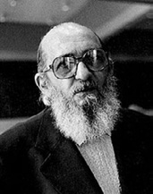
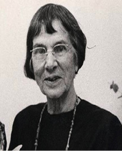
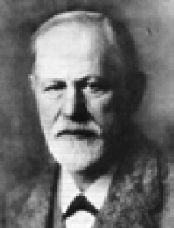
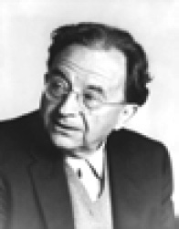
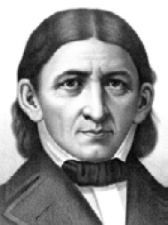

F
faaliyet Bkz. etkinlik.
faaliyet ihtiyacı Bkz. etkinlik gereksinimi.
faaliyet prensibi Bkz. etkinlik ilkesi.
fahişe (prostitute)Para karşılığı erkeklerle birlikte olan kadın; genelev kadını. Günümüzde hemen her toplum, genelevleri bir yerde topluyor ve başta sağlık denetimi olmak üzere, onların ve oraya giden erkeklerin güvenliklerini sağlıyor. Fahişelerin müşterilerini bir yerden bir yere giden erkekler; günlük yaşantısının dışına çıkıp değişiklik arayan erkekler; toplumla ilişki kuramayan delikanlılar ve fahişelerden başka kadınlardan zevk alamayan erkekler oluşturuyor. Cinsel yönden daha özgür gibi görünen fahişeler, gerçekte birilerince sömürülen, kadınlık onurları kırılan bir kesimi oluşturuyor.
faktör Bkz. etken.
faktör analizi (factor analysis) Çok sayıda ölçüm ya da test maddeleri arasındaki iç ilişkileri çözümlemek için kullanılan çok değişkenli bir istatistik yöntemi; etken çözümlemesi. Bu uygulamada, çok sayıdaki değişken, belli bir matris içinde değerlendiriliyor ve aralarındaki korelasyonlar hesaplanıyor. Aralarında yüksek bir korelasyon bulunan değişkenler (ölçüm ya da puan) kümelerinin altta yatan bir özelliği, beceriyi ya da yeteneği ölçtüğü varsayılıyor. Örneğin, çeşitli alanlardan çok sayıda soru içeren bir yetenek testi, daha sonra bu tür bir işlemden geçirilerek, birbiriyle ilişkilenen soru kümeleri belirleniyor ve bu soru kümelerinin, örneğin sözel yetenek, sayısal yetenek ve başka özellikleri ölçtüğü kabul ediliyor. Bkz. çok değişkenli analiz; etken.
faktör teorisi Bkz. etken kuramı.
falaka (bastinado) İnsanların dövülerek eğitildiği zamanlarda ayak tabanlarına vururken, ayakları uygun bir biçimde sıkıştırıp tutmak için kullanılan ve kalınca bir sopa ile bunun iki ucuna bağlı bir ipten yapılmış olan işkence aleti. Falakaya yatırmak, falakaya çekmek deyimleri, bu işkence eylemini dile getirmek için oluşturulmuştur.
fallik anne Bkz. üretken anne.
fallik devre Bkz. üretken dönem.
fallik evre Bkz. üretken dönem.
fallik kadın Bkz. üretken kadın.
fallik kişilik Bkz. üretken kişilik.
fallik sadizm Bkz. üretken elezerlik.
fallik sembol Bkz. üretken simge.
fallik sevgi Bkz. üretken sevgi.
falüs (phallus) Penis ya da klitoris gibi penise benzeyen şey. Gerçekte penis, anatomi terimidir.
fanatik (fanatic) Bir dine, bir öğretiye, bir kimseye, bir şeye aşırı ölçüde, coşku ve tutkuyla bağlı olan bağnaz kişi.
fantazi Bkz. düşlem.
fark etme (to notice) 1. Anlama, sezme, ayrımında olma. 2. Görme, seçme. 3. Ayırt etme, ayrımsama.
farklar psikolojisi (differential psychology) Bireyler ya da gruplar arasındaki psikolojik ayrılıkların doğasını, düzeyini, neden ve sonuçlarını inceleyen psikoloji dalı; ayrımlar ruhbilimi, bireysel ayrılıklar psikolojisi. Bkz. bireysel psikoloji.
farklı yetenek testleri Bkz. özel yetenek testleri.
farmakoloji Bkz. ilaçbilim.
faşist milliyetçi eğitim (fascist national education) Temsilcileri J. G. Fichte ve Hitler olan; idealist ve realist felsefeye dayanan bir eğitim akımı. Bu akımda eğitim, kişiyi yurdunu, ulusunu sever duruma getirme süreci olarak algılanıyor. Buna bağlı olarak yurt, ulus, görev, insan ve doğa ile ilgili ilkeler hedef olarak belirleniyor. Eğitimin içeriğini milli tarih, edebiyat, milli değerler, doğa ve toplumla ilgili dersler oluşturuyor. Öğrenme; yaparak yaşayarak tören düzenlenerek, gösteri yapılarak gerçekleştirilmeye çalışılıyor. Sınama durumlarını ise milli ve manevi değerleri ve görevde yapılanları ölçen, üstün insanı seçen yaklaşımlar oluşturuyor.
faşizm (fascism) Daha çok toplumsal, ekonomik ve siyasal kriz dönemlerinde ve karizmatik önderlerin öncülüğünde oluşup gelişen; toplumdan topluma değişse de temelde milliyetçi ideolojilerden kaynaklanan; bireylerin devlet ya da devletin yüksek çıkarları için kayıtsız koşulsuz kurban edilebileceği anlayışına dayanan baskıcı ve totaliter nitelikteki yönetim biçimi.
faz (phase) Elektrik geriliminde evre.
fazilet Bkz. erdem.
fazlalık etkisi (redundancy effect) Yinelemenin, öğrenilmiş olan şeyi bilinç düzeyinden çıkarma eğilimi. Bu olgu, her türlü duyu sistemi, hareket denetimi, kavramsal temsil gibi bilincin katıldığı her düzeyden süreçte gözlemleniyor. Bkz. alışma; kendiliğindenlik.
fazla yemek yeme bozukluğu (bulimia) Zaman zaman yinelenen aşırı yemek yeme durumu; bulimiya Hasta, yeme bunalımı sırasında denetimden çıkıyor. Bunalımdan sonra ise kilo almaktan korunmak için bir süre ya hiç yemek yemiyor ya da türlü yöntemlerle yediklerini çıkarmaya çalışıyor. Açlık duygusu olmadan, sürekli yemek yeme sonucu hasta, şişmanlıyor. Şişmanlık, çok kez ergenin olumlu benlik geliştirmesine ve arkadaşlarıyla uyumlu birlikteliğine engel oluşturuyor. Kimi genç kızlar, cinsel kimliğini reddetme nedeniyle aşırı şişmanlayarak, bilinçdışında bedeninin cinsel çekiciliğini ortadan kaldırmayı amaçlıyorlar. Bu hastaların iyileştirilmesinde, bilişsel tedavi yararlı oluyor. Bkz. beslenme bozuklukları.
Fehner paradoksu (Fechner’s lparadox) Bir figüre iki gözle baktıktan sonra gözlerden birinin kapatılmasının, figürün parlaklığında bir artışa neden olması.
Fechner yasası (Fechner’s law) Yaşanan duygunun, uyarıcı şiddetinin logaritmasıyla orantılı olduğunu belirten psikofiziksel formül.
fedakârlık Bkz. özveri.
felç (paralysis) Çeşitli bedensel ve ruhsal bozukluklarda görülen ve vücudun çeşitli yerlerindeki istençli hareketlerin bir ölçüde ya da bütünüyle yitirilmesi biçiminde ortaya çıkan hastalık; inme. İnme ayrıca duyu işlevlerinin, zihinsel yeteneklerin (bilişsel süreçlerin) zayıflaması ya da yitirilmesi anlamında benzetme yoluyla da kullanılıyor. İnme, beyin ya da omurilik yaralanmaları, tümör, multipleskleroz gibi sinir sistemini etkileyen hastalıklardan, beyni besleyen kan damarlarından birindeki yırtılmadan, tıkanmadan kaynaklanıyor. Beyin dokusunun yeterli oksijen ve besin alamaması, beynin normal işleyişinin şu ya da bu ölçüde yitirilmesine yol açıyor. Bu nedenlerle ortaya çıkan tablo, hasarın yerine ve büyüklüğüne göre hafif eşgüdümsüzlükten, konuşma güçlüğünden, bilinç yitimine, kalıcı inmeye, komaya; dahası ölüme dek değişiyor. Tek yanlı ya da iki yanlı olabiliyor. Felç, Histerik felç gibi ruhsal kökenli olanı da bulunuyor.
felsefe (philosophy) 1. Genel anlamıyla bilgi sevgisi, bilgelik, gerçek sevgisi; gerçeklerin altında yatan nedenleri ve yasaları inceleme; şeylerin doğasını mantık ve akıl yürütme yoluyla sorgulama; temel inançları eleştirme ve çözümleme; kişinin yaşamda benimsediği değerler sistemini inceleme işi. Önceleri dine ve söylencelere dayalı olarak yanıtlanan bu konulara ilişkin sorular, eleştirel düşüncenin ve gözlemin konusu yapıldıktan sonra felsefe doğdu. 2. Bilimin anası; bilimlerin ön ve temel bilimi. Felsefe, bilimsel araştırmaların kımıldatıcı, yönetici gücüdür. 3. Bilimsel araştırmaları bilimsel araçlarla bütünleyen ve yetkinleştiren çabalar. Felsefe, bir evren tablosu yaratmak üzere bilimler arasında bağ kurmaya; bilimsel bilginin ilkeleri, varsayımları ve yöntemleri üzerinde eleştirel düşünme; bilimsel araştırmalarla insan yaşamı arasında bağlantı kurma işlevi yapmaya çalışıyor. 4. Araştırma yöntemleri geliştiren bilimsel-kavramsal düşüncenin kuşatıcısı; bağımsız, kendine özgü biçimi. Bu anlamda felsefe, çözümleme, eytişim (diyalektik), öz betimlemesi (fenomenoloji), yorumsama (hermeneutik), varoluşu uyandırmadır. 5. Bilimsel bilgileri aşma; karşıtlar içinde birliğe varma; usdışı olan, kişisel yaşantıların ve yaşamın derinliklerinden çıkan değerlere ve değerler düzenine varma (yaşama felsefesi); varoluşun özgürlüğünden ve tarihselliğinden yola çıkarak koşulsuz olana, salt olana varma (varoluşçu felsefe). Felsefe, iki temel bölüme ayrılıyor: Bunlardan birincisi sistematik felsefedir ve fizikötesi ya da varlıkbilim (ontoloji), mantık, bilgi öğretisi, ahlak felsefesi (etik) ve estetik (sanat felsefesi); ayrıca tarih felsefesi, kültür felsefesi, toplum felsefesi, dil felsefesi, hukuk felsefesi, din felsefesi, doğa felsefesi ve başka dallara ayrılıyor. İkincisi ise felsefe tarihidir ve düşüncelerin yaşam ve öğretilerinin tarihi, düşünce tarihi, felsefe sorunlarının tarihi, tarih dönemlerine göre felsefe tarihi, felsefe akımlarının tarihi bölümlerine ayrılıyor. Mantık, etik, estetik, metafizik ve bilgi kuramı (epistemoloji), felsefenin temel uğraş alanlarıdır.
felsefi psikoloji (metapsychology) Psikolojinin ruh-beden sorunu, metapsikoloji, varoluşçuluk, insancılık, varlıkbilim, doğa-çevre tartışması, nominalizm, bilincin yapısı, değer yargılarının insan yaşamındaki yeri, bilimsel yöntemin doğası ve sınırları gibi psikolojinin felsefi sorunlarını inceleyen dalı; felsefe ruhbilimi. Görüldüğü gibi felsefi psikolojide, deneylerle sağlanan psikolojik gerçek ve yasaların ötesinde beden, zihin, canlı, evren ilişkileriyle felsefe kapsamında ileri sürülen görüşler ve oluşturulan kuramlar ele alınıyor.
felsefe ruhbilimi Bkz. felsefi psikoloji.
feminist (feminist) Erkek odaklı yaklaşımların geçerliğini sorgulayan; kadınları ikincil kılan öğeleri ayıklama savaşımı veren (kişi).
feminizm (feminism) Kadın hakları savunuculuğu. Erkek egemen ilişki ve düzenlemelere karşı kadın haklarını savunan, erkeğe tanınan hak ve yetkilerin kadına da tanınması için savaşım veren; cinsiyet ayrımcılığına karşı çıkan anlayış.
fen bilimleri (sciences) Fizik, kimya, matematik, biyoloji adı verilen bilim dallarının ortak adı.
Fenikelilerde eğitim (education in Phoenicia) Suriye kıyısında230 km. boyunda, 4-20 km. eninde çok verimli bir toprak parçası üzerinde yaşayan bir kavim olarak Fenikeliler, Eski Çağ’ın deniz ticareti ve el sanatları ile uğraşıyor, tüm Akdeniz’e söz geçiriyorlardı. Bu kavim, yazıyı geliştirmiş; bunu başka kavimlere de yaymıştı. Güçlü astronomi bilgisine sahipti. Cam, boya yapmasını, dokuma işlerini de bilen Fenikeliler, çocuklarını hayat insanı olarak yetiştirmeye önem veriyorlardı. Onlara para kazanmanın, zevk içinde yaşamanın yollarını öğretiyorlardı. Onlara göre ruh geçiciydi; öldükten sonra her şey toprağa dönüşüyordu. Onun için ölmeden, zevkli bir yaşam sürdürmeyi amaç edinmişlerdi. Tapınakları bile kadın ve erkeklerin zevkli bir yaşam geçirme alanlarıydı. Bu toplumda herkes, kendisi için yaşıyordu. Toplumun çıkarı kavramına değer verilmiyordu. Bkz. eğitim tarihi.
fenomen Bkz. görüngü.
fenomenoloji Bkz. görüngübilim.
fenomenolojik psikoloji Bkz. görüngüsel psikoloji.
fenotip (phenotype) Kalıtımbilimde ve psikolojide, bireyin çevresel ya da yaşam durumunun kendisinde oluşturduğu ya da değiştirdiği görünüşü ya da görünen tüm özellikleri; kalıtım ve çevrenin ortaklaşa yarattığı görünüm; görüngü yapı.
ferdi farklar Bkz. bireysel ayrılıklar.
fetiş (fetish) 1. Büyülü ya da doğaüstü gücü olduğuna inanılan, özellikle canlıcılık ya da Şamanlık uygulamalarıyla ilişkili bir nesne. 2. Aşırı bir dikkat ya da saygı gösterilen bir nesne. 3. Cinsel istek uyandıran ve özellikle doyum için gerekli olan iç çamaşırı, eldiven, çorap ve benzeri bir nesne ya da ayak gibi vücudun cinsellikle ilişkisi bulunmayan bir yeri. 4. Normaldışı bir saplantı, takınak ya da bağlılık.
fetişçilik (fetishism) 1. İlkel toplumlarda doğaüstü gücü ve etkisi olduğuna inanılan canlı ya da cansız varlıklara tapma biçimindeki eylemlerin tümü; fetişizm, tapıncakçılık. 2. İç çamaşırı, eldiven, ayakkabı gibi cinsellikle ilgisi olmayan ve fetiş denen cansız nesnelere ya da vücudun el, ayak gibi çeşitli bölümlerine dokunmaktan cinsel haz duyma biçiminde tanımlanan bir cinsel sapma. Bu biçimdeki cinsel haz için kullanılan nesneler, genellikle karşı cinse aittir. Bu sapmalar, simgesel olabileceği gibi klasik koşullamayla da ortaya çıkabiliyor. Bkz. fetişçi transvestizm; fetiş. 3. Bir şeye karşı duyulan, inanç düzeyine varan derin, aşırı saygı.
fetişçi transvestizm (fetishistic transvestism) Erkeğin kadın giysileri giyerek cinsel heyecan duyduğu bir cinsel sapma. Buna cinsellik değiştirme düşlemleri de eşlik edebiliyor.
fetişizm Bkz. fetişçilik.
fetüs Bkz. dölüt.
fırsat eğitimi (opportunity training) Çok az karşılaşılan ya da bir daha ortaya çıkmayacak olan fırsatlardan öğretim sırasında yararlanmak; fırsat öğretimi. Bu yöntemi uygulamak için gerekirse önceden tasarlanmış olan normal ders planı bozuluyor. Örneğin, bir tepkili uçağın gösteri yaptığı; ünlü bir kişinin okulun önünden geçeceği; görülmrdik bir doğa olayının oluştuğu öğrenildiğinde ders kesiliyor, öğrenciler sınıftan çıkıyorlar, bu yeni konuyla ilgileniyorlar. Kimi, zaman da ders sürerken önemli bir fırsatla karşılaşılıyor. Öğrenciler bir şey yapmak üzere ellerine, az rastlanan bir gereç almış olabiliyorlar. Öğretmen, bu fırsattan yararlanarak o gereçle ilgili bilgi veriyor. Böylece fırsata göre öğretime, gerektiği kadar zaman ayrılarak yer verilmiş oluyor. Bu durumda, fırsat öğretimi için yeni planlar hazırlanıyor.
fırsat eşitliği Bkz. eşitlik.
fırtına fobisi Bkz. fırtına korkusu.
fırtına korkusu (astraphobia) Şimşek ve gökgürültüsüne karşı duyulan hastalık derecesindeki korku; fırtına fobisi, fırtına yılgısı.
fırtına yılgısı Bkz. fırtına korkusu.
figür (figure) 1. Görsel alanın belli bir anlam taşıyan, öbürlerinden öne çıkan ve onu her zaman bir ölçüde, anlamsız fondan ayıran kenar, köşe gibi özellikleri bulunan, kendi içinde bütünlüğü olan bölümü. Bkz. figür-zemin. 2. Sterotipik toplumsal bir rolün temel özelliklerini temsil eden otorite figürü, anne figürü gibi kişiler.
figür-zemin (figure-ground) Algı psikolojisinde, algısal mekanizmanın odaklandığı ya da o an için öbür her şeyden ayrı olarak algıladığı figür (şey) ile bunun arkasında uzanan ve o an için algı odağının dışında kalan öbür her şey (zemin) arasındaki ilişki. Zemin, genelde, figürü çevreleyen türdeş bir uyarıcılar olarak kabul edilse de ilişki tek yöny7lü değildir. Bir şey, algının yön değiştirmesiyle birlikte hem bir figür hem de zeminin bir parçası olabiliyor (figürün belli ve anlamlı bir biçime sahip olduğu ve zemindeki her şeyin de gizilgüç olarak anlamı ve biçimi bulunduğu düşünülürse, figür-zemin ilişkisinin, dışarıda var olan nesnel bir gerçeklik değil, algısal bir olgu olduğu anlaşılıyor. Örneğin, aşağıdaki şekilde algı, sürekli yön değiştirme sonucu, figür-zemin ilişkisi değişiyor. Bkz. figür-zemin ayırt etme; figür-zemin çarpıtması; Rubin figürü.
figür-zemin ayırt etme (figure ground discrimination) Çevrede belirlenen anlamlı bilgilerden hangisinin figüre, hangisinin zemine ait olduğunu algılayabilme yetisi. Bu, görme, işitme, dokunma da içinde olmak üzere bütün duyu sistemleri için geçerlidir. Gürültü eden bir sınıfta öğretmenin sesini duyma, kalabalık arasından tanıdık bir yüzü seçme, bu tür bir ayırt etme yetisiyle gerçekleşiyor. Bkz. figür-zemin; seçici dikkat.
figür-zemin çarpıtması (figure-ground distortion) Nesnenin çevresindekilerin nesne algısını engellemesi nedeniyle nesne üzerinde odaklaşamama.
fikir Bkz. düşünce.
fikir hürriyeti Bkz. düşünce özgürlüğü.
fiksasyon Bkz. saplanım.
filozof (philosopher) Felsefeyle uğraşan ve felsefe biliminin gelişiminde katkısı olan, felsefede çığır açan kimse; felsefeci, düşünür.
filtre kuramı (filtef theory) Algı sürecinde, çevredeki uyarıcılar yığınının kimilerinin seçilip bunlara özel işlemler yapıldığını; öbürlerinin ise göz ardı edildiğini; böylece dikkatin işlevinin, önemli şeylerde kullanılacak işlem kapasitesinde tasarruf etmek olduğunu ileri süren kuramların ortak adı. Bkz. dikkat; filtre paradoksu: seçici dikkat; şekil algısı; şekil tanıma.
filtre paradoksu (fitler paradox) Farklı dikkat; dolayısıyla farklı işlem düzeylerinin bulunması durumu. Seçici dikkat deneyleri, dikkat edilmeyen (bilinçsiz) uyarıcıların da kimi koşullarda oldukça yüksek düzeyde çözümlendiğini gösteren bulgular ortaya koymuştur. Bu sonuçlar, dikkat edilmeyen girdilerin de dikkat edilen girdiler gibi işleme alındığını düşündürüyor; dolayısıyla filtre kuramı yanlılarının dikkatin, işlem kapasitesinde tasarruf sağladığı savını zayıflatıyor. Bu da “farklı dikkat; dolayısıyla farklı işlem düzeylerinin var olduğu” biçiminde açıklanıyor. Buna göre algı sistemi, çevredeki uyarıcıların tümünü sürekli olarak tarıyor ve bir ön filtreden geçiriyor; belli ölçütlere uyan uyarıcıları ise farklı bir işlem düzeyinden geçiriyor. Bkz. seçici dikkat.
filtre teorisi Bkz. filtre kuramı.
firar Bkz. kaçış.
fizik (physics) 1. Konusu madde ve enerji olan bilim dalı. 2. Cansız varlıkları inceleyen bilim dalları. Bu dallar; fizik, kimya, fiziksel jeoloji, fiziksel coğrafya, astronomi ve benzerleridir.
fizikbilimler (physicalsciences) Fizik, kimya, astronomi, jeoloji gibi maddenin, enerjinin ve evrenin fizik olay ve özelliklerini inceleyen bilim dalları.
fizikötesi Bkz. doğaötesi; metafizik.
fiziksel ceza Bkz. bedensel ceza.
fiziksel gerçeklik (physical reality) Gerçekliğin maddi varlık dünyasını kapsayan, gözle görülüp elle tutulan, algı ve gözlem araçlarının işlerlik alanına giren nesnelerden oluşan bölümü. Bkz. gerçeklik; metafizik.
fiziksel saldırganlık (physical aggressiveness) Bedenin herhangi bir ya da birden çok yerine yönelik saldırı.
fizyognomi (physiognomy) Yüz özellikleri ve yüz anlatımından kişiliği okuma. Örneğin, geniş alınlıların zeki; elmacık kemikleri çıkık olanların güçlü; ince dudaklıların hırslı oldukları gibi yorumlar, bu görüşe dayanıyor. Eski çağlardan bu yana süregelen bu bilimdışı görüş, günümüzde bile sürdürülüyor.
fizyoloji (physiology) Canlı organizmaların yaşamsal süreçlerinde gerçekleşen fiziksel ve kimyasal olayları inceleyen biyoloji dalı; işlevbilim. Bkz. fizyolojik gereksinimler; fizyolojik güdü; fizyolojik psikoloji; fizyolojik yaş.
fizyolojik gereksinimler Bkz. MASLOW, Abraham.
fizyolojik güdü (physiological motive) Organizmanın yaşamını sürdürmesi için giderilmesi gereken açlık, susuzluk, cinsellik, uyku, etkinlik gibi bedensel gereksinimlere dayalı güdüler; fizyolojik motif.
fizyolojik motif Bkz. fizyolojik güdü.
fizyolojik psikoloji (physiological psychology) İnsan davranışlarını belirleyen, etkileyen ya da onlar arasında korelatif bir ilişki kurabilen, fizyolojik ya da kimyasal etkenleri inceleyen psikoloji dalı; işlevbilimsel ruhbilim. Bkz. fizyoloji
fizyolojik yaş (physiological age) Bireyin gelişim ya da kötüleşme düzeyinin, çeşitli vücut sistemlerinin işlevsel normlarıyla ölçülerek belirlenen yaşı.
fobi (phobia) Anlamsız, gerçeğe uymayan, abartılı bilinçdışı korkular; ürkü, yılgı. Korku, insanı tehlikeye karşı uyaran ve önlem almaya iten sağlıklı bir tepki iken; fobik tepki (fobik kaygı), insan için bir tehlike oluşturmayan nesne ya da durumlar karşısında kişinin kendini kaptırdığı panik aşamasında aşırı bir korku durumuna bile gelebilen bir korkudur. Örneğin, köpek fobisi olan kişi, köpek yavrusundan bile, çıldırma derecesinde korkuyor. Geniş alanlardan, yüksek yerlerden, uçağa binmekten, kapalı yerlerden, sudan, arabadan, hamam böceğinden, fareden, kediden, yılandan aşırı korkanlar, gerçekte bilinçdışı korkularını bunlara aktarıp, bunlardan uzak durarak, rahat soluk alıyor, kendilerini güvende hissediyorlar. Hemen her nesneyle ilgili fobi yaşanabiliyor. Fobi türü korku, korkulan şeyden kaçınmak için kişide karşı konulmaz bir istek yaratıyor. Kaçınma olanağı bulunmadığında, yoğun bir kaygı ve panik tepkisi ortaya çıkıyor. Bir fobi, önemli bir kaygı durumuna geldiği ya da toplumsal iletişim ve etkileşimi engellediği zaman, fobi nevrozu olarak değerlendiriliyor. Örneğin, “alan, park, sokak gibi açık yerlerden duyulan ürküntü” olarak tanımlanan alan korkusu, bu tür bir fobidir. Yükseklik, yılan, örümcek fobisi gibi fobiler, birçok insanda görülüyor. Kedi, su, mikrop ve başka özel fobiler ise normalde korku yaratmayıp; kişiye özgü kimi simgesel, kimi de klasik koşullamanın sonucu olarak ortaya çıkıyor. Bkz. basit fobi; fobik kişilik; fobik tepki; fobi nevrozu; ikincil savunma belirtileri; nevroz.
fobik kaygı Bkz. fobi.
fobik kişilik (phobic character) 1. Psikanalize göre, zor ya da kaygı verici durumlarla başa çıkmak için kendi yaşam etkinliklerini kısıtlama ya da güvenli ortamlarda kalma eğilimi. 2. Fenichel’e göre, iç çatışmalarla yüzyüze geldiklerinde yansıtma, yer değiştirme ve kaçınma gibi savunma mekanizmalarını kullanmaya yönelen aşırı ketlenmiş ürkek insanların kişiliği. Bkz. fobi.
fobik reaksiyon Bkz. fobik tepki.
fobik tepki (phobic reaction) Fobilerle açıklanan bir nevroz; fobik reaksiyon. Asansöre, uçağa binmek, tünelden geçmek gibi fobik bir durumu yaşayan kişi, hem akut bir kaygı duyumsuyor hem de çarpıntı, mide ağrısı gibi bedensel belirtiler ortaya koyuyor. Bunların sürmesi durumunda olay, panik boyutuna ulaşabiliyor. Fobik tepkilere en çok bilinçdışı çatışmalar ve yasak edilen dürtüler; sarsıcı, örseleyici yaşantılar neden oluyor. Bkz. fobi; nevroz.
fobi nevrozu Bkz. fobi; fobik tepki; obsesif-kompulsif nevroz.
fonksiyon Bkz. işlev.
fonksiyonalizm Bkz. işlevselcilik.
fonksiyon kaybı Bkz. işlev yitimi.
fonksiyonel Bkz. işlevsel.
fonksiyonel analiz. Bkz. işlevsel çözümleme.
fonksiyonel bilgi Bkz. işlevsel bilgi.
fonksiyonel bozukluk Bkz. işlevsel bozukluk.
fonksiyonel enürezis Bkz. işlevsel işeme.
fonksiyonel ilişki Bkz. işlevsel ilişki.
fonksiyonel psikoz Bkz. işlevsel psikoz.
fonksiyonel psikoloji Bkz. işlevsel psikoloji.
form Bkz. biçim.
formatlama (formatting) 1. Öğrenme ve sorun çözme konusunda destek olma. Bu destek, ipuçları, anımsatıcılar, özendirme, sorunu basamaklara bölme, örnek verme ve benzerleri biçiminde gerçekleştiriliyor. 2. Annelerin ve bakıcıların dil gelişimi evresi boyunca çocuğun konuşma çabalarını destekleyen, onu konuşmaya özendiren ve her zaman uyguladıkları oyun ve bakımları. Bkz. formatlı görüşme; formatör.
formatlı görüşme (structured interview) Konusu ya da sorulacak soruları önceden tasarlanıp hazırlanmış bir görüşme.
formatör (formator) Formatlamayı yapan (kişi).
formel Bkz. biçimsel.
formel-işlemsel dönem Bkz. biçimsel-işlemsel evre.
forum (forum) Daha önceden ayarlanmamış konuşmacılarca, gündem konularından birinin tartışıldığı ve toplantıda bulunanların konu üzerinde konuşma hakkına sahip olduğu toplantı.
Frankfurt Okulu (Frankfurt School) Tarihsel temelleri, Frankfurt Toplumsal Araştırmalar Enstitüsü’nün 1923’te toplumcu araştırmalar yürüten bir merkez olarak kurulmasıyla atılan okul. Bu okulun önde gelen kişileri olan Theodor Adorno, Max Horkheimer, Herbert Marcuse’tur.
FRANKL, Viktor Emil (1905-1998) Amerikalı psikiyatrist; III. Viyana Okulu olarak bilinen hümanist varoluşçu akımın kurucusu. Frankl, Yahudi bir ailenin çocuğu olarak dünyaya geldi. Tıp eğitiminden sonra Nazi iktidarının ilk yıllarında tek Yahudi hastanesi olan Rothschild Hastanesi’nin Nöroloji Bölümü’nün başına getirildi. Ancak, 1942 yılında ailesiyle birlikte toplama kampına gönderildi. Üç yıl kaldığı Auschwitz toplama kampından sağ kurtulan az sayıda kişiden biri olan Frankl, o dönemde ve sonrasında logoterapi diye adlandırdığı bir psikoterapi yaklaşımı geliştirdi. Bu yaklaşım, yaşamda bir anlam bulma çabasının insan yaşamında temel itici güç olduğu düşüncesine dayanıyor. Bu yaklaşıma göre, günümüzdeki psikiyatrik sorunlara, yaşamda bir anlam bulamamak ve bunun yarattığı varoluşsal boşluk yol açıyor. Frankl’ın yayımlanmış çok sayıda yapıtı vardır. Başlıca yapıtları: İnsanın Anlam Arayışı (1963), The Doctor and the Soul: Fromm Psichotherapy to Logotherapy (1955), Duyulmayan Anlam Çığlığı (1978). Bkz. anlam istemi; aşırı düşünme; aşırı niyet; boyutsal varlıkbilim; can sıkıntısı; düşünce odağını değiştirme; hümanist psikoloji; özaşkınlık; varoluşsal boşluk; varoluşsal engellenme.
FREIRE, Paulo (1921-1997) Brezilyalı eğitimci. Recife’de alt orta sınıftan bir ailenin çocuğu olarak dünyaya geldi. Küçük yaşta yoksullukla tanıştı. Recife Üniversitesi’nde hukuk, felsefe ve dil psikolojisi eğitimi gördü. Portekizce öğretmenliğine başladı. Ezilenlerin yanında yer aldı. Savaşımı sırasında burjuvalarla çatışma yerine halkla birlikte çalışmaya karar verdi. Halkla diyalog kurabilmek için kendi referans çevresini değil; halkın referans çevresini kullanması gerektiğini öğrendi. 1946’da Brezilya’nın yoksul kuzey eyaletlerinden Pernambuco’da Eğitim ve Kültür Bakanlığı Sosyal Hizmetler Müdürlüğü’ne getirildi. Buradaki deneyimleri yoksulların eğitimine ve gereksinimlerine ilişkin düşüncelerinin temelini oluşturdu. 1947’de halkı özgürleştirmeyi amaçlayan bir okuma yazma yöntemi geliştirdi. Bu yöntemde, okuma yazma öğrenenlerin günlük yaşamından esinlenmiş bir gereç ve bu gereci konu alan metinler kullanılarak halk, gerçek anlamda siyasal açıdan bilinçlendirilmek isteniyordu. 1959’da Recife Üniversitesi’nde doktora tezini ezilenlerin bilinçli okuma yazma öğrenmesi ve sorunları çerçevesinde hazırladı. Aynı üniversitede 1961’de Kültürel (Açık) Eğitim Bölümü Müdürlüğü’ne atandı. Burada, geliştirmiş olduğu yöntemi uygulama olanağını buldu. Daha sonra aynı üniversitede eğitim tarihi ve felsefesi profesörü olarak görev aldı. 45 günde 300 tarım işçisine okuma yazma öğretmeyi başarınca piskoposluğun da desteği ile Brezilya hükümeti adına, 1963-1964’te benzer ilkelerle çalışan 20 bin kültür merkezi oluşturdu. Hedef, 1964 yılına kadar 2 milyon kişinin okuma yazma programlarından geçirilmesiydi. Hemen her ilde bu uygulamanın eşgüdümcüleri (öğretmenler) için 8 aylık yetiştirme kursları açıldı. Ancak, bu girişim, ülkenin tutucu kesimlerinin tepkisini aldı. Okuma yazma bilmeyenlerin oy kullanma hakkının olmadığı Brezilya’da bu programla bir şeyleri değiştirme düşüncelerinin aşılandığı ileri sürüldü. Freire, bu konuda tek gerçek suçunun, okuma yazmayı mekanik bir sorun olmaktan daha fazla bir şey olarak düşünmek; okuma yazmanın eleştirel bilinçle bağlantısını kurarak halkın özgürleşmesine yardım etmeye çalışmak olduğunu belirtti. Ne ki uygulama tam etkisini gösterme zamanını bulamadı; 1964’te yapılan askeri darbe ile ulusal okuma yazma kampanyasına da son verildi. Feriere, Recife Üniversitesi profesörü ve ulusal okuma yazma programının ulusal başkanı sıfatıyla saygın ve oldukça tehlikeli bir kişilik olarak görüldüğünden tutuklandı, üniversiteden de atıldı; ayrıca Tanrı’nın ve Amerikalıların düşmanı olarak ilan edildi. 75 günlük tutukluluk ile onu izleyen görüşmeler sonunda Bolivya’ya sığınma hakkını elde etti. Ancak, 15 gün sonra orada da darbe yaşanınca Freire, Şili’ye gitti ve orada beş yıl kaldı. Şili’de de okuma yazma sorunu ciddi boyutlarda olduğundan, 1965’te kurulan Yetişkinlerin Eğitimi için Özel Planlama Dairesi Başkanı, Şili Üniversitesi’nde çalışmakta olan Freire ile ilişki kurarak onun okuma yazma yöntemini uygulamaya karar verdi. Karşı çıkmalara karşın, Daire Başkanı W. Cortes’in çabalarıyla program uygulamaya konuldu. Şili Tarım Reformu Dairesi’nin Eğitim ve Araştırma Enstitüsü’nde görev verilen Freire ile işbirliği yapılarak yetişkin okuma yazma programının uygulanması sürdürüldü. 16 yıllık sürgün yaşamının ilk 5 yılını Şili’de geçiren Freire, sonra Harvard Üniversitesi Eğitim Okulu’nda danışmanlık yaptı. İlk kitabı olan Bir Özgürleşme Pratiği Olarak Eğitim’i 1967’de; Ezilenlerin Pedagojisi’ni de 1968’de yayımladı. 1973’te İngiltere’deki Açık Üniversite, eğitime yaptığı katkı nedeniyle kendisine onursal doktora verdi. 1975’ten sonraki çalışmalarını daha çok, bağımsızlığını yeni kazanmış olan ülkelerin sorunlarına ve istemlerine uygun bir eğitimi tasarlama konusunda yoğunlaştırdı. 1980’e dek İsviçre’de Dünya Kiliseler Birliği eğitim bürosunda özel danışmanlık yaptı. 1980’de çıkan afla Brezilya’ya dönünce Sao Paulo’da, Pontificia Katolik Üniversitesi’nde çalışmaya başladı. Girdiği İşçi Partisi’nde 1980-1986 arasında Yetişkin Eğitimi Sekreterliği görevinde bulundu. Onun görüşlerini yaymak üzere 1981’de Paulo Freire Enstitüsü kuruldu. 1986’da İşçi Partisi’nin belediye seçimini kazandığı Sao Paolo’da kentin eğitim sekreteri olarak çalıştı. Bu dönemde Güney Amerika ve Afrika ülkelerinin eğitimi üzerine birçok çalışma yaptı. Pek çok ülkede seminerlere katıldı, konferanslar verdi. Eğitim felsefesi ile ilgili çarpıcı çalışmalarıyla tanınan Freire’nin düşünceleri, Hıristiyan özgürleşme teolojisi ile işçi dayanışmasını öne çıkaran Marksist bakışın bir sentezi görünümündedir. Başlıca yapıtları: Cultural Action For Freedom, 1967 (Özgürleşme Pratiği Olarak Eğitim); Pedagogy of the Oppressed, 1969 (Ezilenlerin Pedagojisi); Pedagogy in Process: Letters to Guinea-Bissau (Bir Süreç Olarak Pedagoji; Gine-Bissau’ya Mektuplar); The Politics of Education: Culture, Pover and Liberation (Eğitim Politikası: Kültür, İktidar ve Özgürleşme).

frekans (frequency) 1. Ses, ışık dalgaları gibi dönemsel olgularda saniyedeki yineleme sayısı. 2. İstatistikte bir veri setinde değişkenlerin aldığı puan ve benzeri farklı değerlerin yinelenme sayısı. Bkz. frekans dağılımı; frekans histogramı; frekans kuramı; frekans poligonu.
frekans dağılımı (frequency distribution) İstatistiksel bir dağılım aralığının bölündüğü bitişik ve eşit genişlikteki aralıklar kümesi. Her aralık, aralıktaki ölçümlerin sayısını gösteren bir frekans ile ilişkilenmiştir. Bkz. normal dağılım.
frekans histogramı (frequency histogram) Grafiksel bir veri sunuş biçimi. Histogramların her biri, veri kümesindeki değişkenlerin, örneğin, puanlar gibi farklı değerlerinin hangi sıklıkta yinelendiğini gösteren bir dizi çubuktan oluşuyor.
frekans kuramı (frequency theory) Bir işitme kuramı. Bu kurama göre, Bazilar zarı, kulak zarına çarpan sesin frekansıyla doğru orantılı ve bir bütün olarak titreşir.
frekans poligonu (frequency polygon) İstatistikte sıklık dağılımını gösteren bir eğri.
frenoloji Bkz. kafatası bilimi
FREUD, Anna (1895-1982) Avusturya doğumlu, İngiliz psikanalist. Sigmund Freud’un altı çocuğundan yalnızca en küçüğü ve istenmeyerek dünyaya gelen Anna Freud, babasının yolunu izledi ve psikanalist oldu. Anna, mutsuz bir çocukluk geçirdi. Çocukluğuna ilişkin, sıkılma ve terk edilme duygusunu; annesinin gözbebeği olan kız kardeşi Sophie’yi kıskandığını anımsıyor. Daha sonra ise babasının gözdesi oldu. Anna, babasının çalışmalarıyla daha 14 yaşında iken ilgilenmeye başladı. Babasına yönelik duygusal bağlılığı onu kaygılandırdı ve 22 yaşında onunla analize girdi. Ancak, baba, dört yıl süren bu analiz nedeniyle kendini eleştirdi ve bunu “divanın her iki ucundaki Ödipal bir felaket” olarak nitelendirdi. Anna, psikanalizle ilgili ilk çalışmasını 1924 yılında Viyana Psikanaliz Topluluğu’nda okudu. Adı bilinmeyen bir hastanın olay öyküsüne dayandığını söylediği Fantezi ve Hayalleri Yenmek başlıklı çalışması, gerçekte Anna’nın düşlemlerine ilişkindi. Yasak aşk baba-kız ilişkisi düşlerini, bunları yenişini ve mastürbasyon yoluyla cinsel doyuma ulaşmasını anlatmıştı. Bildiri, Freud ve meslektaşlarınca olumlu bulundu ve Anna’nın topluluğa girmesine izin verildi. Hiç evlenmeyen Anna, yaşamını duygusal zarar görmüş çocuklara psikanalizin uygulanmasına ve uzun hastalık döneminde babasının bakımına adadı. On yıldan fazla bir süre, Freud’un yaşamında en önemli kişi oldu. Bu sıkıntılı yaşamına karşın psikanalitik bir uygulama geliştirmek ve çocukların analizine öncülük etmekle kalmadı; pek çok kitap ve makale yazdı ve babasının düşüncelerine önemli katkılarda bulundu. 1927 yılında yayımlanan Çocuk Analizi Tekniğine Giriş adlı ilk kitabıyla ilgilerinin yönünü de haber vermiş oldu. Çocukların tedavisiyle hiç ilgilenmemiş olan baba Freud’un kızı olarak Anna, onların görece olgunlaşmışlıklarını yeterince gelişmemiş sözel becerilerini göz önünde tutan bir psikanalitik tedavi yaklaşımı geliştirdi. Çalışmalarının büyük bölümünü, Freud ailesinin 1938 yılında Nazilerden kaçarak yerleştikleri Londra’da gerçekleştirdi. Kimi oyun malzemeleri kullanmak ve çocukları evlerinde gözlemlemek, onun getirdiği yenilikler arasındadır. Hastalarıyla, evinin bitişiğinde açtığı klinikte ilgilendi; tüm dünyadan çalışmak amacıyla gelen klinik psikologlar için Psikanaliz Eğitim Merkezi’ni de burada kurdu. Çalışmalarını, 1945 yılında yayımlanmaya başlanan Çocuğun Psikanalitik Araştırması dergisinin yılda bir kez çıkan sayılarında yayımladı. Anna Freud, ortodoks psikanaliz kuramını yeterince inceledikten sonra “Benlik ilkelbenlikten bağımsız bir işlev görüyor.” yargısını belirleyip benimsediği için rolünü genişletti. Benlik ve Savunma mekanizmaları (1936) adıyla yayımladığı kitabında, benliği kaygıdan koruyan savunma mekanizmalarının kullanımını ayrıntılarıyla açıkladı. Çok önemli bir katkı olarak değerlendirilen ve bugün de psikanalitik benlik psikolojisinin temel kitaplarından biri sayılan bu kitap, birçok dile çevrildi. Freudçu savunma mekanizmalarının standart listesi, Anna Freud’un çok daha net bir biçimde anlatımı ve çocukların çözümlenmesinden örneklerle desteklenmesi ile ortaya konuldu. Anna Freud ve yandaşlarınca geliştirilen benlik psikolojisi, 1940-1970 arasında Amerika’da Freudçular, psikanalizi bilimsel psikoloji’nin bir parçası durumuna getirmek amacıyla Freudçu kavramları sadeleştirmeye, işlemsel olarak tanımlamaya, psikanalitik varsayımın deneysel araştırmasını yapmaya ve psikanalitik psikoterapiyi değiştirerek gerçekleştirmeye çalıştılar. Bu yolla deneysel psikoloji ile psikanaliz arasında daha yakın bir ilişkinin gelişmesini sağladılar. Benlik psikanalistleri, kendilerini genelde Freudçu olarak tanımladılarsa da psikanalizin türevlerine ve karşısında yer alanlara bu etiketi kaptırmamış oldular. Psikanalizde bir başka değişikliği, Melanie Klein gerçekleştirdi. Başlıca yapıtları: Das Ich und die Abwehrmechanismen, 1936 ( Ben ve Savunma Mekanizmaları); Infants Without Families and Pathology (D. Burlingham ile), 1943 (Ailesiz Çocuklar); Normality and Pathology in Childhood: Assessments of Development, 1965 (Çocuklukta Normallik ve Patoloji: Gelişimin Değerlendirilmesi); Problems of Psychoanalytic Training, Diagnosis and the Technique of Therapy, 1966-1970 (Psikanaliz Eğitimi ve Tanıda Sorunlar, Terapi Tekniği); The Writings of Anna Freud, 7 cilt, 1966-1970 (Anna Freud’un Yapıtları). Bkz. benliğin savunma mekanizmaları; benlik psikanalistleri; çocuk analizi; çocuk psikolojisi; KLEİN, Melania; psikanaliz.

Freudculuk (freudianism) İnsanları yöneten ruhsal güçlerin bilinçdışında bulunduğunu savunan kişilik kuramı. Bu kurgusal (spekülatif) bilinçdışının da derinlerde olduğu kabul edildiğinden, buna derinlik psikolojisi de deniyor. Kuram, psikanalitik (ruhçözümcü) psikoloji (psychoanalitic psychology), psikanaliz (psychoanalysis) adlarıyla da anılıyor. Bkz. FREUD, Sigmund; psikanaliz.
freudcu okul Bkz. psikanaliz.
Freudizm Bkz. Freudculuk.
FREUD, Sigmund (1856-1939) Avusturyalı nörolog, psikiyatrist, psikanalizin kurucusu. Freud, Moravia’da (şimdiki adı Pribor olan ve Çekoslovakya’da) bulunan Freiberg kasabasında dünyaya geldi. 1939’da Londra’da öldü. Başarısız bir yün tüccarı ve Yahudi olan babası, işleri bozulduğundan, ailesiyle birlikte önce Leipzig’e; ardından da Viyana’ya göç etti. O zaman 4 yaşında olan Freud, Viyana’da yaklaşık 80 yıl kaldı. Freud’un annesinden 20 yaş büyük olan babası, sert ve otoriter bir kişiydi. Freud, genç bir delikanlı olarak babasına karşı hem korku hem de sevgi duyguları beslemişti. Koruyucu ve sevgi dolu olan annesine karşı da düşkünlük derecesinde bağlıydı. Babasının korkusu ve annesine duyduğu cinsel çekiciliğin, daha sonra onun Ödip karmaşası adını verdiği durumu ortaya koymasına kaynaklık ettiği ileri sürüldü. Ailenin sekiz çocuğundan biri olan Freud, ilk yıllardan başlayarak büyük bir zihinsel yetenek sergilemişti. Bu nedenle ailesi onu cesaretlendirmek amacıyla, içinde daha iyi aydınlatma olanağı sağlayan bir petrol lambası bulunan evin tek odasını ona verdi. Ailenin diğer bireyleri ise mum kullandılar. Freud’u rakip görerek ona kızan diğer kardeşlerin müzik çalışmasına, genç düşünürü rahatsız eder kaygısıyla izin verilmedi. Freud, Almanya’da lise dengi bir okul olan Gymnasium’a normalden bir yıl önce girdi. Bu okulu 17 yaşında, ödül alarak bitirdi. İlgileri arasında uygarlık, insan kültürü, biraz da askeri tarih bulunuyordu. Darwin’in evrim kuramı, onda yaşamı anlamaya ilişkin bilimsel bir ilgi uyandırmıştı. Kimi duraksamalar geçirmiş olsa da sonunda tıp eğitiminde karar kıldı. Ancak, bir doktor olarak çalışmak için istek duymuyordu; tıp eğitiminin kendisini yalnızca bilimsel araştırmalara yönelteceğini umuyordu. Freud, 1873’te Viyana Üniversitesi’nde eğitimine başladı. Birden çok alana yönelik ilgileri nedeniyle doğrudan tıp eğitimine bağlanmadı. Eğitimini tamamalamak için orada harcadığı sekiz yılın başlarında biyoloji üzerinde yoğunlaştı. Ardından fizyolojiye yöneldi. Tıp eğitimi sırasında kokaini denedi ve kokainin tıpta ilk kez uygulanmasından sorumlu oldu. Bu maddenin histeri, kronik sindirim güçlüğü, siyatik üzerinde olumlu etkileri olduğunu görmüş ve mucize türünden bir keşifte bulunduğunu sanmıştı. Freud, üniversite ortamında bilimsel çalışmalarını sürdürmek istediyse de ekonomik olanaksızlıklar yüzünden özel doktor olarak çalışmaya başladı. Hastane eğitimi sırasında anatomi ve sinir sisteminin organik hastalıkları, özellikle de inme, söz yitimi, çocuklarda beyin yıkımı ve konuşma bozuklukları üzerinde uzmanlaştı. 1881 yılında yüksek lisans derecesini alarak ertesi yıl klinik nörolog unvanıyla çalışmaya başladı. Bu alandaki çalışmalarıyla iyice tanınmasına karşın, bu alan onu çekmiyordu. Ancak, 1882’de kendisi gibi yoksul olan Martha Bernays ile nişanlanınca bu işi yürütmek zorunda kaldı. Freud, nişanlılığı boyunca Martha’yı en yakınlarından bile aşırı kıskanıyordu. Parasal sorunlar yüzünden, evlilik, ancak 4 yıl sonra gereçekleşebildi. Evliliklerinin ilk yıllarında saatini rehin bırakacak kadar sıkıntı çekti. Freud o yıllarını hiçbir zaman unutmadı. Uzun çalışma saatleri, Freud’un karısı ve çocuklarıyla yeterince birlikte olmasını engelliyordu. Karısı uzun yürüyüşlere ve turistik gezilere dayanamadığı için tatile tek başına ya da baldızıyla birlikte çıkıyordu. O yıllarda Freud, solunum çalışmaları ve dairesel kanalların işlevinin keşfi ile ünlenen doktor Jozef Breuer ile çok yakın bir arkadaşlık geliştirdi. Freud’a parasal destek bile veren Breuer, hastalarını onunla birlikte ele alıyor ve tartışıyordu. Bunlardan biri olan Anna O olayı, psikanalizin gelişmesinde çok etkili oldu. 21 yaşındaki bu zeki, genç ve çekici kadın, felç, bellek yitimi, zihinsel bozukluklar, mide bulantısı, görme bozuklukları, konuşma bozuklukları gibi bir dizi histeri belirtileri gösteriyordu. Onu hipnozla tedavi etmeye başlayan Breuer, Anna’nın hipnozun etkisi altında kimi kişisel deneyimlerini anımsadığını ve bunlar üzerinde konuşunca, hastalık belirtilerinin azaldığını görmüştü. Örneğin, susamasına karşın su içemeyen Anna, hipnoz altında, çocukluğunda da benzer bir hoşlanmamayı yaşadığını anlatmıştı. Bir bardaktan su içerken, hoşlanmadığı bir köpeği gördüğünü anımsayıp bunu Breuer’e anlattıktan sonra Anna rahatlıkla su içmeye başlamış ve o hoşlanmama belirtisi bir daha görülmemişti. Anna bir yıldan uzun bir süre her gün Breuer’le görüşmüş ve günün rahatsız edici olaylarını ona anlattığında, bozukluk belirtilerinden biraz daha kurtulmuştu. Breuer, hipnozun etkisi altında Anna’nın tiksinti ve korkularının zayıfladığını ya da tümüyle ortadan kalktığını Freud’a anlattı. Breuer ile Anna arasında oluşan yakın duygusal ilişkiyi, Breure’in karısı kıskanmaya başlamıştı. Bu dönemde Anna da Breuer’e karşı, olumlu aktarım (positif transferans) denilen bir duygu durumuna girmişti. Bu, Anna’nın, babasına karşı olan duygularını Breuer’e aktarması anlamına geliyordu. Breuer’in, babasına benzemesi de aktarımı geliştiren bir etken olmuştu. Breuer de hastasına duygusal olarak bağlanmaya başlamıştı. Bu durumu kendi yaşamı için bir tehdit olarak gören Breuer, Anna’nın tedavisine son verdi ve onu bir daha görmeyeceğini söyledi. Ancak olay burada bitmedi. Birkaç saat sonra Anna, histerik doğum sancıları çekmeye başladı. Breuer, hipnoz ile bu olayı sonlandırdı ve ertesi gün, karısıyla ikinci balayına çıktı. Gerçekten çok, bir kurguya benzeyen bu olay, psikanalizin gelişmesinde oldukça önemli bir yere sahiptir. Çünkü daha sonraki çalışmalarında çok belirgin olan aktarım yöntemini (konuşma kürünü) Freud’a bu olay tanıtmıştı. 1889 yılında Freud, Fransa’da Charcot’nun yanına gitti ve dört buçuk ay boyunca onunla çalıştı. Orada Charcot’nun, bir histeri hastasının tedavisinde hipnozu nasıl kullandığını gözlemledi. Charcot, histeri davranışlarında cinselliğin rolü konusunda Freud’u uyardı. Bu uyarı, Freud’un, hastalarında cinsel sorunların izlerine karşı tetikte olmasını sağladı. Charcot, Yunancada “dölyatağı” anlamındaki hystera’dan türetilen histerinin, yalnızca kadınlara özgü bir bozukluk olmadığını göstermişti. Freud, hastalarına hipnoz ve aktarım yöntemini uygulamayı sürdürüyordu; ama hipnoza karşı gittikçe hoşnutsuzluk duymaya başlamıştı. Çünkü bu yöntem, tümden iyileşmeyi sağlayamıyordu. Hastaların birçoğu, başka belirtilerle geri dönüyordu. Ayrıca kimi sinir hastaları, kolayca ve yoğun biçimde hipnoza giremiyordu. Bu ve başka nedenler, Freud’un, bu yöntemi bırakmasına neden oldu. Ancak, Freud, aktarımı bırakmadı; adım adım, psikanalitik yöntemin en önemli aşamasına geldi ve özgür çağrışım (free association) yöntemini geliştirdi. Özgür çağrışım sürecinde hastanın bir divana uzanmasını ve ondan utandırıcı, önemsiz ya da saçma görünüp görünmemesine bakmaksızın her düşüncesine tam bir açıklama getirmesi için açık ve içinden geldiği gibi (spontan olarak) konuşmasını istiyordu. Freud’un geliştirdiği bu psikanalitik yöntemle hastanın anormal davranışlarının olası nedenini oluşturan bastırılmış anı, istek ya da düşüncelerini bilince çıkararak bunların farkına varması amaçlanıyordu. Özgür çağrışım yöntemiyle Freud, hastalarının belleklerinin çocukluk yaşantılarına doğru geri gittiğini ve bastırılmış anılarının çoğunun cinsel konularla ilgili olduğunu bulmuştu. Freud, hastalarının rahatsızlıklarının nedenleri arasında cinsel etkenlerin olası bir rolü olduğu konusunda daha önceden hazırlıklıydı. Cinsel hastalıklar konusunda güncel yazından da haberi olan Freud, hastalarının öyküsünde cinsel öğelerin ortaya çıkışına daha çok ayak uydurur duruma gelmişti. 1895’te Breuer’le Freud, psikanalizin resmi başlangıcı sayılan Histeri Üzerine Çalışmalar adlı kitabı yayımladılar. Bu çalışma, Freud’un istediği açık ve ılımlı bir tanınmanın başlangıcı oldu. Ancak, Freud’un, cinselliği nevrozun tek nedeni olarak görmesi, Breuer’le yollarının ayrılmasına neden oldu. Freud, 1890’ların ortalarında, hastalarının çoğunun, özellikle kendi aile üyelerinin de işin içinde olduğu, travmatik (sarsıcı) cinsel deneyimler yaşadıklarını belirttiklerine tanık oldu. Bunlardan yola çıkarak bu konuyu bu tür olayları yaşamayan ve normal cinsel yaşamı olan bir insanın nevroz geliştirmeyeceğini ileri sürme noktasına dek getirdi. Freud, 1896 yılında düzenlediği bir raporda hastalarının, çocukluklarında sarkıntılığa benzer deneyimleri bulunduğunu; sarkıntılık yapan kişinin de yaşlı bir akraba; sıklıkla da baba olduğunu ortaya koyduklarını belirtti. Bugün çocuk sömürüsü diye adlandırılan bu sarkıntılığın, kimi de iğfal travmasının yetişkin nevrozlarının ana nedeni olduğuna inandığını bildirdi. Rapor, çok eleştirildi. Freud, bir yıl sonra düşüncesini değiştirdi. Hastaların çocukluk deneyimi olarak anlattıklarının gerçekte yaşanmadığını; bunların hastanın düşlemleri olduğunu ileri sürdü. Bu görüş, psikanalizin gelişiminde bir dönüm noktası oluşturdu. Freud, anlattıkları düşlemlerin, hastalara oldukça gerçek göründüğüne karar verdi. Bununla birlikte, bu düşlemlerin cinsellik üzerinde yoğunlaşmasından yola çıkarak, nevrozların nedeninin cinsellik olduğu konusundaki düşüncesini korudu. Son dönemlerde yapılan araştırmalar da çocuğun cinsel sömürüsünün, sanılandan daha yaygın olduğunu ortaya koyuyordu. Psikanalistler arasında Freud’un ilk görüşlerinin doğru olduğunu savunanlar bile vardı. Freud’un izinden gidenlerden birisi olan Sandor Ferenzi, 1930’larda, kendi hastalarının açıklamalarına dayanarak Oedipus karmaşasının düşlemlerden değil; gerçek istismar davranışlarından kaynaklandığı sonucuna varmıştı. Duygusal yaşantımızda cinselliğin rolü üzerinde özellikle duran Freud, kişisel olarak cinselliğe karşı olumsuz bir tutum içine girmişti. Nevroz geliştirmemiş insanların bile bu “kaba hayvansal gereksinime” tenezzül etmemeye çalışması gerektiğini savunuyordu. Daha 41 yaşındayken bir arkadaşına, “cinsel uyarı, benim gibi bir insan için artık işe yaramaz.” diye yazmıştı. Freud, aynı yıl, cinsel etkinliklerini tümüyle bırakmaya karar vermiş ve kendini çözümleme (self-analysis) görevine başlamıştı. Birkaç yıl boyunca nörotik zorlukların bir bölümünü yaşadı. Kendi durumuna kaygı nevrozu tanısını koydu ve rahatsızlığının nedenini de cinsel gerilimin birikmesi olarak anlattı. Migren ağrıları, üriner sorunlar ve spastik kolon rahatsızlıklarını; ölüm, yolculuk, açık yerler ve kalp hastalıklarına ilişkin kaygı duygularını yaşadı. Bu dönem, Freud’un hem şiddetli iç karmaşalar yaşadığı hem de en üretken olduğu dönemdir. Nevroz kuramının büyük bölümünü, gerçekten, kendi nörotik sorunlarından ve onları çözümleme çabalarından yararlanarak oluşturdu. Kendisini çözümlemeyi, kendisini ve hastalarını daha iyi anlamayı sağlayan bir araç olarak ele aldı ve bu iş için rüya çözümlemesini kullandı. Freud, bir hastasının rüyalarında oldukça zengin duygusal öğelerin kaynağını keşfetmişti. Rüyaların çoğunlukla bir rahatsızlığın altta yatan nedenlerine ilişkin ipuçlarını içerdiğini gördü. Her şeyin bir nedeninin olduğunu belirten pozitivist görüşe dayanarak bir rüyadaki olayların tümüyle anlamdan yoksun olamayacağını düşünüyordu. Rüyalar, kişinin bilinçdışındaki bir şeylerden kaynaklanıyor olmalıydı. Üstelik, rüya imgelerinin simgeselliği görüşü, ta antik zamanlara dayanan bir kuramdı. Hem hasta hem de tedavi eden rolünü yapmanın çok zor oluşu nedeniyle kendisini özgür çağrışım yöntemiyle çözümleyemeyeceğini düşünen Freud, bu amaçla rüyalarını incelemeye karar verdi. Her sabah uyandığında, gördüğü rüyaları hemen kaydediyor ve onları özgür çağrışım yöntemiyle çözümlüyordu. Yaklaşık iki yıl sürdürdüğü kendini çözümleme çabası sonucunda, en temel çalışması sayılan Rüyalar ve Yorumları (1900) adlı kitabının yayımlanmasıyla doruğa ulaştı. Oedipus karmaşasının ana çizgilerini, kendi çocukluk yaşantılarına dayanarak ilk kez bu kitabında ortaya koydu. Birçok eleştiri almış olsa da bu çalışma, ona geniş kapsamlı bir tanınma sağladı ve olumlu yorumlandı. Carl Gustav Jung adlı genç de bu kitabı okuduktan sonra hızla yeni psikanalize yöneldi. Kitap, Freud hayattayken 8 baskı yaptı. Freud, rüya çözümlemesini psikanalizde (ruhçözümlemede) kullandığı tekniklerle birleştirdi; yaşamının geri kalan bölümünde her gününün son yarım satini kendini çözümlemeye ayırdı. Freud’un 1900’den sonra daha üretken bir konuma geçerek yeni düşünceler geliştirdiği ve bunları yaydığı görülüyor. 1901’de Günlük Yaşamın Psikopatolojisi Üzerine adlı ünlü kitabını yayımladı. Bu kitabında, normal bir insanın günlük davranışlarında olduğu gibi, nörotik belirtilerde de bilinçdışı düşüncelerin açığa çıkmak için sürekli savaştıklarını; bu nedenle de düşünce ve davranışları değiştirebildiklerini savundu. Dil sürçmesi ya da unutmanın nedenlerinin gerçekte, açığa vurulamayan güdülerin bir yansıması olabileceğini belirtti. Freud’un bir sonraki kitabı, Cinsellik Kuramı Üzerine Üç Deneme adıyla 1905’te yayımlandı. 1902’de Freud’un kimi öğrencilerinin çok istemeleri üzerine oluşturulan ve haftada bir gerçekleştirilen tartışma grubunun ilk katılımcıları arasında Alfred Adler ve Carl Gustav Jung da vardı. Bu iki kişi, daha sonra, cinselliği öne çıkarışına karşı çıkılmasını asla bağışlamayan Freud’un kimi görüşlerine karşı bir tutum takınacak ve kendi görüşlerini kuramlaştırarak ünlü olacaklardı. Freud, daha sonra şunları yazdı: “Psikanaliz, benim eserimdir; on yıl boyunca kendisi hakkında psikanalizle düşünen tek insan benim. Psikanalizin ne olduğunu hiç kimse benden daha iyi bilemez.” 20. yüzyılın ilk 10 yılı, Freud’un kişisel ve mesleksel durumunu geliştirdiği yıllardır. Artan uygulamaları sonucunda, giderek daha çok insan, onun resmi bildirilerini okur duruma geldi. 1909 yılında 20. kuruluş yılı dolayısıyla konuşmak üzere Clark Üniversitesi’ne çağrılıp kendisine fahri psikoloji doktorasının verilmesi, uluslararası bir kabulün ilk işareti olmuştu. Freud burada William James, James MCKeen Cattell ve E. B. Titchner’in de bulunduğu birçok ünlü psikolog ile karşılaştı. İzleyicilere çok önemli görgül keşifler yapan bir bilim adamı ve terapist olduğunu söyledi. Clasrk’ta verdiği 5 konferans, ertesi yıl Amerikan Psikoloji Dergisi’nde yayımlandı; sonra da birkaç dile çevrildi. Freud’un bilinçdışı kavramı, Amerikan halkınca büyük bir ilgi gördü. Kendisini iyi karşılayan Amerika’yı beğenmediğini belirten Freud, oraya bir daha gitmedi. Onun, uzun yıllar yaşadığı Viyana’dan da hoşlanmadığı biliniyordu. 20. yüzyılın ilk on yılında psikanaliz aile bireylerinin, anlaşmazlık, uyuşmazlık, muhalefet ve eksiklikler nedeniyle birbirinden koptuğu görülüyor. 1911 yılında Adler’in; 1914 yılında da Jung’un ayrılmasıyla üç rakip grup oluştu. Bu ayrılış sırasında Freud, “psikanaliz” adını yalnızca kendi grubu için korumayı başardı. Savaş yılları, Freud’un parasal sıkıntılar yaşamasına yol açtı. Freud, adını doruğa 1919-1939 döneminde ulaştırdı. Çok çalışmayı; hastalarını her gün birkaç saat görmeyi; her yaz üç ay tatil yapmayı sürdürdü. 1920’lerde psikanaliz, yalnızca ruhsal bozuklukları tedavi eden bir yöntem olmaktan çıkarak insanın güdülenişini ve kişiliğini bütünüyle anlamayı amaçlayan kuramsal bir sistem olarak gelişti. 1923 yılında Freud’a ağız kanseri tanısı konuldu. Bunun sonucu olarak Freud, yaşamının son 16 yılını hemen hiç bitmeyen ağrılarla geçirdi. 33 kez ameliyat oldu. Damağının ve üst çenesinin bir bölümü alındı. Ameliyatında kullanılan protez, konuşmasını zorlaştırdı ve onu anlamak, gittikçe güçleşti. Bu nedenle hastaları ve müdavimleri dışındaki kişisel ilişkilerden kaçınmaya başladı. Günde 20 sigara içmeyi, hastalığına tanı konduktan sonra da sürdürdü. Hitler, 1933 yılında Almanya’da iktidar olunca Freud’un kitapları, Berlin’de bir otomobil yarışı sırasında açıkta yakıldı. Bunun üzerine Freud, “Bizimki de ne ilerleme! Ortaçağ’da olsa beni yakarlardı; bugünlerde kitaplarımı yakmakla doyum sağlıyorlar.” yorumunu yaptı. 1934 yılı geçmeden, ileri görüşlü Yahudi psikanalistler ve psikologlar, Almanya’yı terk ettiler. Psikanalizin Almanya’da kökünü kurutmayı hedefleyen güçlü Nazi kampanyasının etkisiyle, Freud’un çok yaygın olan tüm bilgileri, hemen hemen tümüyle yok edildi. Freud, arkadaşlarının önerilerine karşın, Viyana’da kalmakta direndi. 1938 yılı Mart ayında Almanya Avusturya’yı işgal edince 15 Martta bir Nazi çetesi, Freud’un evini bastı. Bir hafta sonra, kızı Anna tutuklanarak bir gün alıkonuldu. Bu son olay, Freud’u kendi güvenliği için ülkesini terk etmesi gerektiğine inandırdı. Ancak, satılmamış kitapları yakılmak amacıyla İsviçre’den getirilmedikçe, gitmesine izin verilmedi. Naziler, daha sonra, Amerika Büyükelçiliği’nin de girişimiyle Freud’un İngiltere’ye geçmesine izin verdiler. Daha sonra, Freud’un kız kardeşlerinden dördü, Nazi toplama kamplarında öldürüldü. Freud’a Viyana’dan gidişinde, oturma izni sağlamak için, Gestapo tarafından “saygılı ve düşünceli” muamele gördüğünü ve şikâyet etmesini gerektirecek hiçbir şey olmadığını belirten bir belge imzalattılar. Freud İngiltere’de iyi karşılandı; ancak, sağlığı hızla bozulduğu için, yaşamının son yılını huzursuzluk içinde geçirdi. Zihinsel olarak uyanık olmayı ve yaşamının sonuna dek çalışmayı sürdürdü. Freud, çektiği acılar artınca özel doktoru Max Schur’a yıllar önce, ondan aldığı bir sözü anımsattı ve “Zamanım geldiğinde beni terk etmeyeceğine söz vermiştin.” dedi. Bunun üzerine doktor, Freud’a 2 santigramlık morfin verdi. 12 saat sonra dozu yineledi. Freud, komaya girdi ve yıllar süren acıları, 23 Eylül 1939’da dindi. Freud, hakkında olumlu ve olumsuz en çok yazılmış ve söylenmiş kişilerden biridir. Başlıca yapıtları: Histeri Üzerine Çalışmalar (J. Breuer ile) (1895), Rüyalar ve Yorumları (1900), Günlük Yaşamın Psikopatolojisi Üzerine (1901), Şaka ve Bilinçdışıyla İlişkisi (1905), Cinsiyet Üzerine Üç Deneme (1905), Totem ve Tabu ( 1913), Psikanalitik Hareketin Tarihi Üzerine (1914), Psikanalize Giriş Üzerine Dersler (1917), Haz İlkesinin Ötesinde (1920), Ego ve İd (1923), Hayatım ve Psikanaliz (1925), Ket Vurma, Belirti ve Endişe (1926), Bir Yanılsamanın Geleceği (1927), Uygarlığın Huzursuzluğu (1930), Musa ve Tektanrıcılık (1939), Toplu Yapıtlar (1940). Bkz. FREUD, Anna; Freudculuk; Freudcu okul; Freud’un insana bakışı.

Freud’un insana bakışı Bkz. FROMM, Erich; özgürlükten kaçış yaklaşımı (Marks ve Freud’un İnsana ve Topluma Bakışı).
Freud’un ruhsal yapı sınıflaması (Freud’s taxonomy of psychological state) Freud’un, libidonun yönlendirilişine dayanarak belirlediği libidinal tipler. İnsanları Freud, iki ana ruhsal tipe ayırmıştır: (1) Erotik tip. Bu tiplerde içgüdüsel gereksinimler baskındır. Bunlarda içgüdüler, sevme ve sevilmeye odaklanmıştır. Bunlar, başkalarına belirli bir bağlılık gösteriyorlar; sevgiyi yitirme kaygısını yaşıyorlar. Aşırı durumlarda bu tiplerin bu doğal özellikleri, takınağa dönüşebiliyor. (2) Özsever (narsisistik) tip. Bunlar, erotik gereksinimleri fazlaca duymuyorlar. Bu tipler, özellikle kendileriyle ilgileniyorlar. Fazlaca kaygıya kapılmıyorlar. Saldırganlıkları belirgin olduğundan, kolaylıkla etkinliğe geçiyorlar. Başkalarına destek ve rehber olma eğilimindedirler. Bu tiplerin de takınaklı (aşırı) durumları görülüyor. Her iki tipin varyantları bulunuyor. Bkz. FREUD, Sigmund; tipoloji.
Freudun rüya kuramı Bkz. rüya.
FROMM, Erich (1900-1980) Alman kökenli Amerikalı psikanalist, toplumsal felsefeci ve hümanist toplumcu. Erich Fromm, Frankfurt’ta sinirli ve huysuz bir baba ile bunalıma eğilimli bir annenin çocuğu olarak dünyaya geldi. İsviçre’de Muralto’da öldü. Hahamlar soyundan gelen Fromm’ın çocukluğu sofu bir ortamda geçmişse de insancıl eğilimleri, onu daha çok felsefi uğraşlara yöneltti. Etkileri günümüze dek uzanan ve hoyratlık zincirinin başlangıcı olan Birinci Dünya Savaşı, ailenin bu tek çocuğu üzerinde derin izler bıraktı. 1922’de Heidelberg Üniversitesi’nde felsefe doktorasını veren Fromm, 1922-1926 arasında Münih Üniversitesi’nde, daha sonra Berlin Psikanaliz Enstitüsü’nde psikanaliz konusunda çalışmalar yaptı. Tıp eğitimi görmediği halde, 1925’te bir yandan psikanaliz çalışmalarını yürütürken, öte yandan da Uluslararası Psikanaliz Derneği’ne üye oldu. 1929-1932 arasında Frankfurt Psikanaliz Enstitüsü’nde ve kurucuları arasında Adorno ve Horkheimer gibi ünlü düşünürlerin bulunduğu Frankfurt Toplumsal Araştırma Enstitüsü’nde öğretmenlik yaptı. Almanya’da Hitler’in Nasyonal Sosyalist Parti’si iktidar olduktan sonra 1934’te Toplumsal Araştırma Enstitüsü ile birlikte New York’a taşındı ve 1939’a dek bu enstitüde çalıştı. 1940-1950 arasında Colombia Üniversitesi’nde, Amerikan Psikanaliz Enstitüsü’nde, Benningto College’de ve Yale Üniversitesi’nde ders verdi. 1951’de Ulusal Meksika Özerk Üniversitesi’nde profesör oldu. Meksika Psikanaliz Enstitüsü’nü kurdu. Burada toplumsal sınıflarla kişilik tipleri arasındaki ilişkiler üzerine kapsamlı araştırmalar yaptı. 1957-1961 yılları arasında Michigan Eyalet Üniversitesi’nde çalıştı. 1962’de New York Üniversitesi psikiyatri profesörü oldu. 1971’de araştırmalarını orada sürdürmek üzere İsviçre’ye gitti. Siyasete 12-13 yaşından bu yana ilgi duymasına ve etkin bir toplumcu olmasına karşın Amerikan Sosyalist Partisi üyeliği ve Barış akımında etkin rol almak dışında hiçbir siyasal çalışma ya da eylemde bulunmadı. Dünya barışına katkıda bulunmak amacıyla birçok ülkede konferans verdi. Yeni Freudcu okul içinde yer aldı. Marx ile Freud arasında bir yerde, kendine özgü bir yaklaşım geliştirdi. Freud’un temel ilkelerini benimsemesine karşın, onda gözlemlediği biyolojik-mekanik belirlenimcilik ile Marx’ta gözlemlediği ekonomik belirlenimciliği reddederek, onların yerine “özgürlük”, “özgür istenç ve insanın seçim yapabilme yetisi”, “üretkenlik” ve “sevgi”yi öne çıkarma yolunda büyük çaba gösterdi. Freud’un bireye uyguladığı psikanalizi, topluma uyguladı. Çeşitli toplum yapıları ile kişilik yapıları ve genel yönelimler arasındaki ilişkileri çözümledi. Fromm üretken bir yazardır. Başlıca yapıtları: Kendisi İçin İnsan (1947); Psikanaliz ve Din (1950); Unutulmuş Dil (1951); Sevme Sanatı (1956); Sigmund Freud’un Görevi (1958) Psikanaliz ve Zen Budizm (Suzuki ve De Martino ile, 1960); İnsan Üstün Gelebilir mi (1961); Yeni Bir İnsan Yeni Bir Toplum (1962); Sevginin ve Şiddetin Kaynağı (1964); Umudun Devrimi (1968); Psikanalizin Krizi (1970); Hürriyetten Kaçış (1972); İnsandaki Yıkıcılığın Kökeni (1973); Çağımızın Özgürlük Sorunu (1973); Sevme Sanatı (1975); Sahip Olmak Ya da Olmak (1976); Kendini Savunan İnsan (1982); Sağlıklı Toplum (1982). Bkz. özgürlükten kaçış yaklaşımı.

frontal lop Bkz. alın bölgeleri.
FRÖBEL, Fried (1782-1852) Pestalozzi’nin düşüncelerine bağlı, çocuk bahçesi (Kindergarten) pedagojisinin kurucusu. Frobel, 1817’de Kailhan’da bir eğitim yurdunu yönetti. 1831’de başlayarak İsviçre’de öğretmen yetiştiren kurumlarda ve Pestalozzi’nin yanında Brgdorf’taki yetimler yurdunda çalıştı. 1837’de Blankenburg’da ilk çocuk bahçesini açtı. Bu kurum, yine onun tasarladığı Alman çocuk bahçelerinin ilk basamağı oldu. O, bütün Almanya’yı çocuklar için bir büyük bahçe durumuna getirerek cennete çevirme düşü, onun biricik tutkusuydu. Bu düşünü gerçekleştirmek için 1849’da Çocuk Bahçesi Öğretmen Okulu’nu açtı. Siyasal kuşku nedeniyle 1851’de Prusya’da çocuk bahçeleri yasaklandı ve bu yasak 1860’a dek sürdü. Çocuk bahçeleri Frobel’in ölümünden sonra yeniden açıldı. Fröbel’e göre yaratma isteği, insanın temel güdüsüdür. İnsan, kendini tanımak, bilmek istiyorsa yaratmak zorundadır.Yaşam, yaratmakla anlam kazanıyor. Düşünmek ve yapmak, bir kâğıdın iki yüzü gibidir. Yapmak, düşünmeyi yaratıyor; düşünme de daha çok yapmaya fırsat hazırlıyor. Yapmakla düşünmek bir araya gelince de yaratma gerçekleşiyor. Yapıt yaratma isteği, insanı kendi yaratıcısına benzetiyor. Yaratma güdüsü ile ortaya çıkarılmış yapıt arasında çalışma adı verilen uzun bir yol vardır. İnsanı yapmak, denemek ve anlatmak denen üç güç eğitiyor. İnsan, kendi görevlerini özgürce kendisi gerçekleştirmelidir. Çünkü her canlı, etkinlik göstererek, çalışarak, yaparak gelişebiliyor. İnsan da bunlar sayesinde akıllı yaratık olabiliyor. Pestalozzi’nin düşüncelerinden esinlenip onları daha da geliştiren Fröbel, çalışmalarını küçük çocukların eğitimi üzerinde yoğunlaştırmıştır. Ona göre eğitimin temelini oyun, uğraş ve iş oluşturmalıdır. O, çocuğa buyurma yolunu değil; onun kendi kendine etkinlik göstermesine yardım etme yolunu seçmiştir. “Fröbel armağanları” adını verdiği oyuncakları ve uğraş araçlarını bu amaçla geliştirmiştir. Başlıca yapıtları: Menschenerziehung, 1826; Nachricht u. Rechenshaeft von d. deutschenKindergarten, 1843; Nutter-u Koselieder, 1844. Bkz. çocuk bahçesi.

füj (fugue) Kişinin birdenbire evinden ya da işinden kaçmasıyla ve geçmişini, kimliğini tümüyle unutarak (temel beceriler unutulmuyor) başka bir yerde, yeni bir adla yaşama başlaması biçiminde ortaya çıkan bir tür çözülmeli bozukluk. Bu hastalar, bellek yitimi ortadan kalktıktan sonra geçmiş yaşamını anımsayabiliyor; ancak füj dönemini anımsamıyorlar. Uzun süreli füj olayları, tehdit edici, ürkütücü ortamlardan, gerçeklikten kaçmaya yönelik bilinçsiz bir isteğe bağlanıyor. Sara ya da donuk heyecan gibi durumlarda da kısa süreli füj yaşanabiliyor. Bellek yitimi kendiliğinden, hipnotik telkinle ya da çeşitli ilaçların yardımıyla ortadan kaldırılabiliyor. Bkz. bellek yitimi; çözülmeli füj.